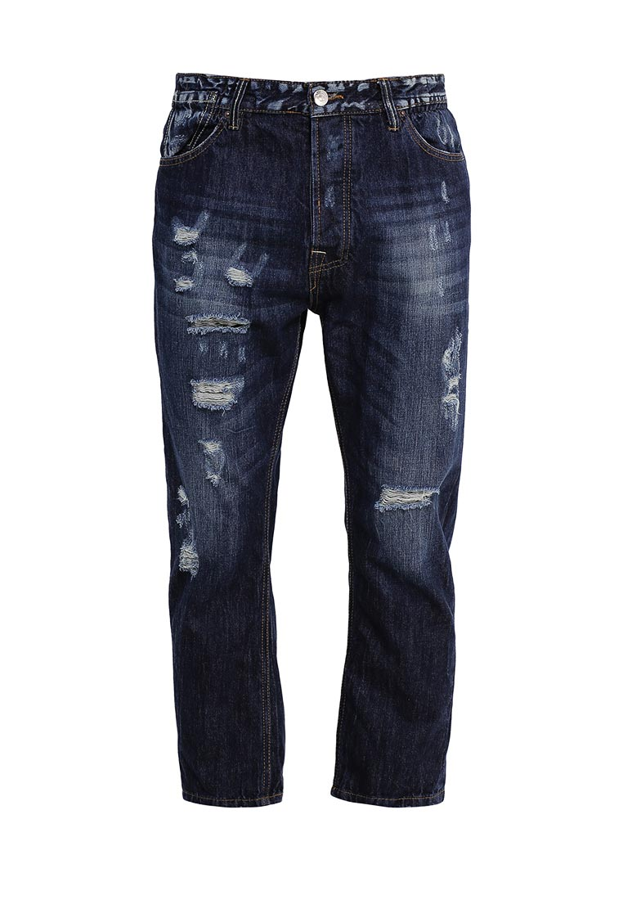
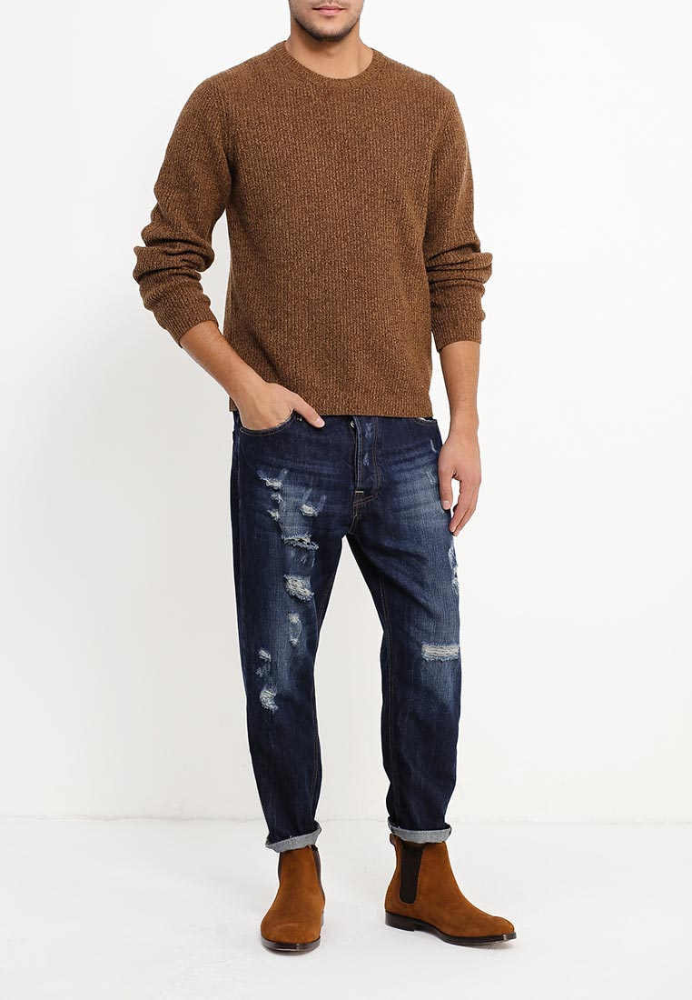
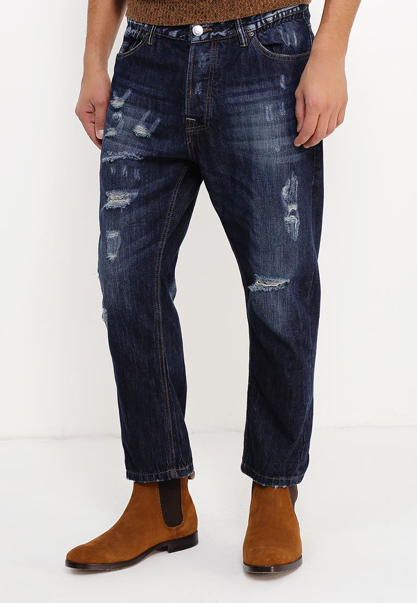
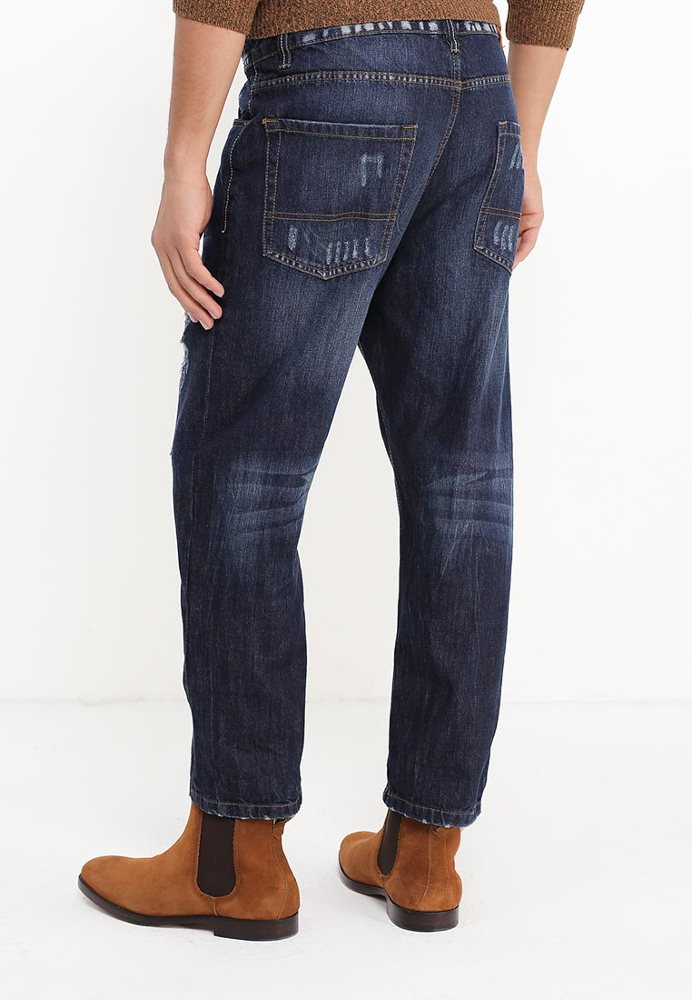

Джинсы Piazza Italia выполнены из плотного денима. Детали: застежка на пуговицы, три кармана спереди, два кармана сзади, шлевки, винтаж.
Состав Хлопок - 100%
Длина по боковому шву 94 см
Длина по внутреннему шву 61 см
Высота 29 см
Обхват по бедрам 110 см
Ширина по низу 20 см
Обхват по талии 94 см
Размер модели на фото 48
Рост модели на фото 187
Параметры модели 98-80-99
Посадка Regular Fit
Застежка на пуговицах
Цвет синий
Страна производства Бангладеш
Сезон Мульти
Стиль Повседневный
Коллекция Осень-зима
Детали одежды винтаж
Узор Однотонный
Потертость Слегка потертые
Тип джинс/брюк зауженные
Карманы 5
Артикул PI022EMMSI45
Более детально с данными джинсами Вы можете ознакомиттся на этих фото:
   Все права защищены ©